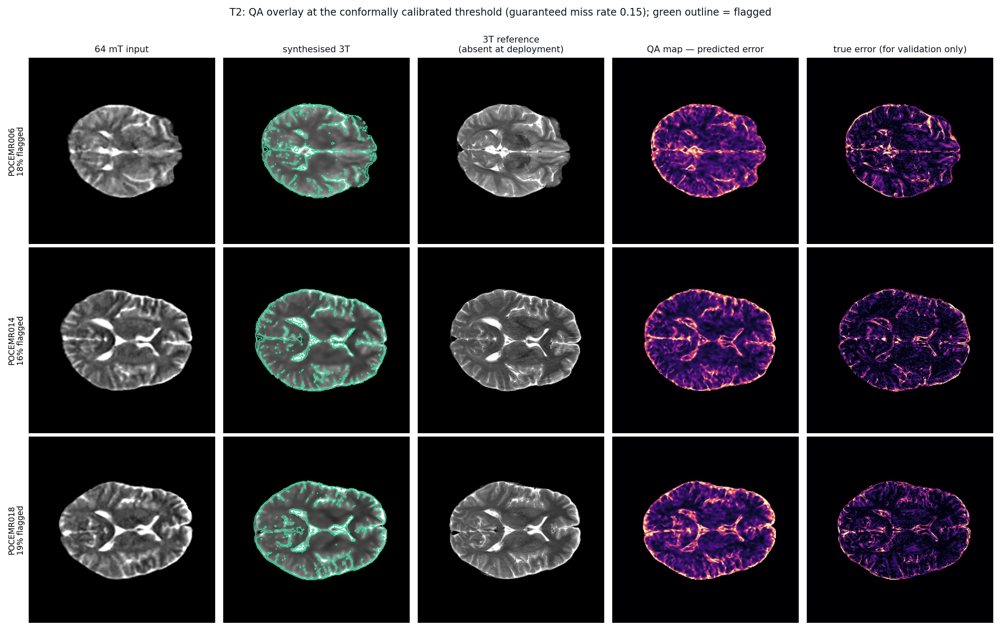
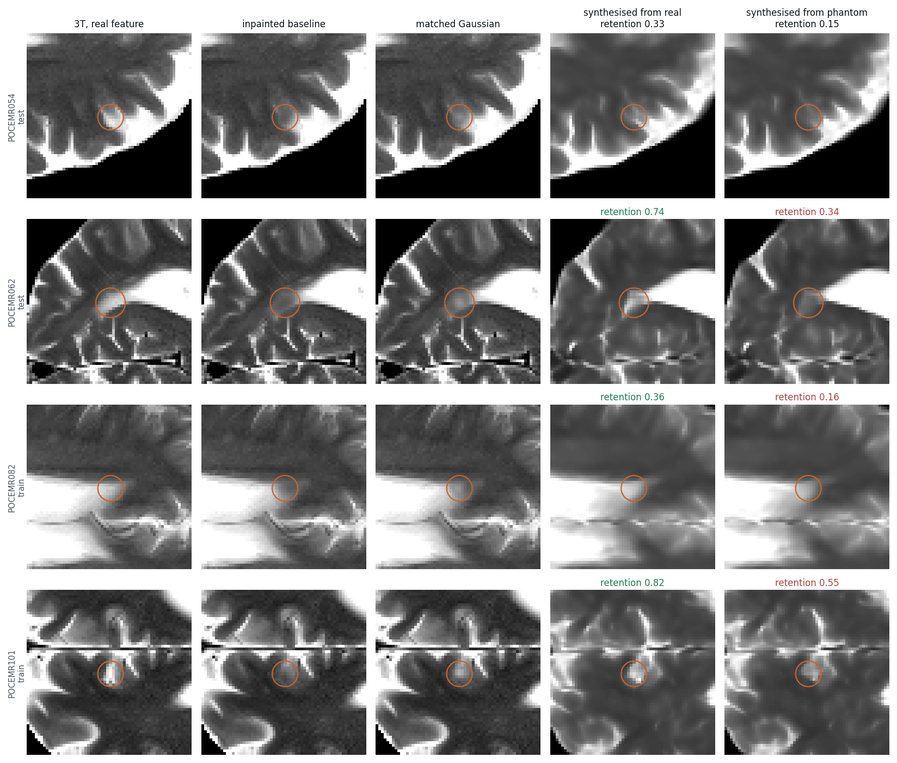

A map that flags unreliable regions, calibrated so that what it leaves unflagged is a promise — and a controlled lesion study showing which promise it is actually making. Plus four things that did not work, and the reason the flagged error has to go to a human rather than back into the model.
At deployment there is no 3T to check against. The reader has the 64 mT scan and a synthesised 3T image, and nothing else. So the only useful output is a map saying do not trust the synthetic detail here — read the 64 mT instead, and the only guarantee worth making is a false-negative one: what the map leaves unflagged must actually be reliable, because nobody will check it.
That reframes explainability as a prediction task with a measurable ground truth. It also makes the paired cohort decisive. Posterior sampling, MC-dropout and sensitivity maps all guess at error from model-internal signals. With 50 paired subjects the error can be learned supervised — which no synthesis-only or domain-randomised pipeline can do.
Three locked-test subjects. The reader gets columns one, two and four; the 3T reference and the true error exist here only to validate the map.

The error threshold τ is the 90th percentile of calibration error (T2 0.1597, T1 0.2349), so about 10% of test voxels count as "bad". The edge-magnitude row is the one that matters: every uncertainty map in this literature risks being an elaborate edge detector.
| score | T2 AUROC | T2 AP | T1 AUROC | T1 AP |
|---|---|---|---|---|
| learned QA map (supervised) | 0.820 ± 0.021 | 0.339 | 0.654 ± 0.015 | 0.161 |
| deep ensemble, 4 fold models | 0.799 ± 0.021 | 0.314 | 0.664 ± 0.015 | 0.158 |
| 64 mT edge magnitude | 0.712 ± 0.024 | 0.239 | 0.527 ± 0.011 | 0.100 |
| |change from the 64 mT input| | 0.651 ± 0.022 | 0.211 | 0.558 ± 0.024 | 0.117 |
| supervised QA map vs free deep ensemble | T2 | T1 |
|---|---|---|
| Δ AUROC | +0.021 (p 0.002) | −0.009 (p 0.027) |
| Δ average precision | +0.026 (p 0.002) | +0.004 (p 0.193, n.s.) |
| brain flagged at α = 0.15 | 21.9% vs 25.1% | — (map unusable) |
So the claim has to be narrower than it first looked. On T2 the supervised map wins on every subject, but by +0.021 AUROC and 13% less flagged area, not by the factor of two the edge comparison suggested. On T1 it is significantly worse than the free baseline. If four enhancers already exist from cross-fitting, their disagreement is nearly as good and costs nothing.
So the useful statement is not “supervised beats unsupervised”, which is close to tautological. It is: given a paired cohort you already have, is a dedicated error predictor worth the extra run? On T2, marginally. On T1, no.
α = 0.10 is infeasible — eight calibration subjects put the conformal-risk floor at 1/(n+1) = 0.111, regardless of how good the map is. α = 0.20 is trivially satisfied by flagging nothing, because τ is the calibration 90th percentile so the base miss rate is 0.10 by construction. The informative window is α ∈ (0.111, 0.20).
| T2, at α = 0.15 | brain flagged | realised miss | bad voxels caught |
|---|---|---|---|
| learned QA map | 21.9% | 0.052 | 64.1% |
| deep ensemble | 25.1% | 0.051 | 65.9% |
| 64 mT edge magnitude | 42.1% | 0.054 | 71.9% |
| |change from input| | 99.7% | 0.185 | 99.5% |
At the same guaranteed miss rate the QA map halves the amount of brain a reader must re-check — 21.9% against the edge map's 42.1%. That is the quantity clinical time is actually spent on.
Threshold set on calibration, measured on test. Base rate is 10.8%, so flagging 20% at random would catch about 20%.
| % of brain flagged → | 4.7 | 9.6 | 19.8 | 30.2 | 50.8 |
|---|---|---|---|---|---|
| learned QA map | 19.3 | 35.5 | 60.2 | 75.8 | 90.3 |
| deep ensemble | 19.1 | 34.3 | 57.8 | 73.1 | 88.3 |
| 64 mT edge magnitude | 14.0 | 25.2 | 43.6 | 58.1 | 76.3 |
| |change from input| | 15.2 | 25.6 | 38.6 | 48.0 | 63.2 |
The threshold was chosen on subjects that had a 3T. It carries to subjects that do not only if they are exchangeable with the calibration cohort. The 48 ULF-only subjects are the honest test — same scanner, no reference, used for nothing else. Error cannot be measured there, but the score distribution can.
| T2 | T1 | |
|---|---|---|
| KS distance, paired-test vs unlabelled | 0.0189 | 0.0150 |
| p50 / p90 / p99 ratio (unlabelled ÷ paired) | 0.98 / 0.97 / 0.99 | 1.02 / 1.01 / 1.00 |
| brain flagged, paired test | 21.4% ± 2.5 | 74.5% ± 3.1 |
| brain flagged, unlabelled | 19.8% ± 2.0 | 75.9% ± 2.4 |
The distributions are nearly identical, so the exchangeability the guarantee needs is not obviously violated and the threshold plausibly carries to deployment. This is the check that makes the heatmap honest in the setting it is meant for, and it is only possible because the project kept an unpaired 64 mT pool.
Natural pathology is absent from this cohort, but controlled lesions are not. A hyperintense blob of known radius and contrast is inserted into a held-out 3T slice, pushed through a forward operator to give a 64 mT scan that genuinely contains it, and then synthesised. Everything is a paired difference against the same slice with no lesion, so the underlying anatomy cancels. 5,760 measurements across the 10 locked subjects, and both forward operators agree to within ~0.05 retention at every size — so this is a property of the synthesis, not of the operator.
| lesion diameter | contrast retained | QA elevation | flagged at deployed threshold | control sites flagged |
|---|---|---|---|---|
| 4 mm | 0.169 ± 0.029 | 1.34× | 19.4% | 10.4% |
| 6 mm | 0.307 ± 0.037 | 1.50× | 22.8% | 5.0% |
| 8 mm | 0.422 ± 0.045 | 1.57× | 28.1% | 7.9% |
| 12 mm | 0.526 ± 0.038 | 1.54× | 29.8% | 9.0% |
Every lesion-versus-control difference is significant at p = 0.0020 — all ten subjects move together. Retention scales with size and barely with contrast, the signature of a resolution limit rather than an SNR one; the spectral gap and the re-acquisition ceiling reached the same conclusion by two other routes.
The conformal guarantee is defined on voxel intensity error, and that is not the same quantity as clinical salience. A small low-contrast lesion can be erased completely while the resulting intensity error stays below τ, so the map is behaving correctly by its own definition and still missing the finding a radiologist cares about. The guarantee is sound; the risk function is wrong.
Conformal risk control does not require the risk to be voxel error. Re-pose it on lesion miss rate — among lesions the map did not flag, at most α are clinically significant — and the lesion simulation supplies exactly the labelled data needed to calibrate it, stratified by size and contrast. That converts a guarantee about intensities into a guarantee about findings, which is the one a clinician can act on.
Caveats. Smooth synthetic blobs in white matter, not real pathology — shape, texture and location diversity are absent. The degradation is simulated by two operators, neither a real acquisition of a real lesion. T2 only, since the T1 map fails independently.
A lesion is a physical object, so it is inserted into the 3T T1 and the 3T T2 of the same subject at the same site, with the clinically common polarity — T2-hyperintense, T1-hypointense at half the magnitude, as for white-matter disease, oedema and infarct. Retention is always measured against the 3T T1 lesion, because that is the image a reader looks at.
| route into the synthesised 3T T1 | retention | % erased | 4 mm | 12 mm |
|---|---|---|---|---|
| A · 64 mT T1 → 3T T1 | 0.153 ± 0.023 | 77.8% | 97% | 60% |
| B · 64 mT T2 → 3T T1 | 0.671 ± 0.066 | 21.0% | 46% | 8% |
| C · both → 3T T1 | 0.539 ± 0.054 | 26.7% | 60% | 9% |
Changing which image you feed in cuts erasure by 57 percentage points (p = 0.002, all ten subjects). The T1-driven route erases 60% of even 12 mm lesions; the T2-driven route erases 8%. Adding the T1 input alongside T2 makes preservation slightly worse (26.7% vs 21.0%), which sharpens Direction 2's “the 64 mT T1 acquisition is near-redundant” into for lesion preservation it is actively harmful.
That was the reading until the control came back. It does not survive contact with it.
The table above was measured at one polarity — T2-bright, T1-dark — which is both the clinically common case and the relationship present in every training pair. Two explanations were tangled: “the T2 image carries the lesion better” and “the model knows T2-bright means T1-dark”. The sweep below holds the T1 lesion's magnitude fixed and flips its sign, so conspicuity cannot explain the gap.
| T1/T2 polarity | A · T1 in | A inverted | B · T2 in | B inverted |
|---|---|---|---|---|
| T1-dark, strong (canonical) | 0.183 | 11% | 0.370 | 4% |
| T1-dark, half (canonical) | 0.153 | 12% | 0.671 | 4% |
| T1-bright, half (violates) | 0.150 | 14% | −0.386 | 95% |
| T1-bright, strong (violates) | 0.156 | 12% | −0.294 | 95% |
Route A is flat across all four rows (0.150–0.183). It reads the T1 lesion directly, so the relationship between the contrasts is irrelevant to it: it erases three lesions in four either way, but it is never systematically wrong about which way the lesion points.
Route B is not transferring anything. Its output is set by the T2 input and the population-average T2→T1 coupling — double the true T1 lesion and the T2 input is unchanged, so the numerator is unchanged and retention halves (0.671 → 0.370, a factor of 1.81 against a predicted 2). It is applying a learned rule: right when the lesion obeys the average coupling, proportionally wrong when the magnitude differs, and sign-inverted when the sign differs — at 95% of sites.
So the protocol advice becomes conditional rather than absolute: route B buys a large gain on canonical lesions and manufactures polarity errors on the rest; route A is uniformly poor but unbiased. Neither is safe unaided. And the obvious repair does not work — see below.
Route C sees the 64 mT T1 channel and inverts anyway, which suggests it has the disambiguating evidence and ignores it — reasonably, since every training pair is normal anatomy where the coupling always holds. So: retrain it with lesions whose T1 contrast is sometimes the “wrong” sign, control and treatment differing in one flag.
| route C, by T1/T2 polarity | control | augmented |
|---|---|---|
| T1-dark, half (canonical) | 0.599 / 10% inv | 0.565 / 10% inv |
| T1-bright, half (violates) | −0.328 / 89% inv | −0.316 / 88% inv |
| T1-bright, strong (violates) | −0.218 / 88% inv | −0.192 / 87% inv |
Nothing moves. Normal-anatomy SSIM is untouched (0.5557 → 0.5564), so the augmentation costs nothing — it simply achieves nothing. Inversion stays at 87–89%.
A third run adds an explicit lesion-footprint term worth as much as the whole-brain one — a roughly five-thousandfold per-pixel upweighting — differing from the augmented run in that term alone. The threshold for “loss weighting was the problem” was set in advance at below 50% inversion.
| route C, % inverted | control | augmented | + weighted loss |
|---|---|---|---|
| T1-dark (canonical) | 10% | 11% | 2% |
| T1-bright, half (violates) | 89% | 88% | 91% |
| T1-bright, strong (violates) | 88% | 87% | 86% |
86–91%. Refuted, against a threshold fixed before the run. But not a null result: on canonical lesions the weighting works well — spurious inversion falls from 10–11% to 2%, and normal anatomy improves rather than paying for it (SSIM 0.5557 → 0.5719). The model learned “reproduce the lesion that is there”. It did not learn “read the T1 channel's sign”.
And no image-quality metric can see the difference — SSIM and PSNR over a population of normal anatomy are blind to a per-lesion sign flip. “64 mT T2 predicts 3T T1 better” is true on average and dangerous per lesion, which is precisely the gap a detectability map exists to close.
If the input route matters more than the model, the next question is whether the number everyone reports picks the right model at all. Six trained enhancers, the same lesions, the same forward operator, the same ten locked test subjects.
| enhancer | PSNR | SSIM | retention | % erased | 4 mm erased |
|---|---|---|---|---|---|
| U-Net L1 | 19.42 | 0.622 | 0.354 | 41.5% | 88% |
| U-Net L1+SSIM | 19.73 | 0.655 | 0.409 | 34.2% | 85% |
| U-Net absolute | 19.62 | 0.628 | 0.356 | 39.0% | 90% |
| cGAN / pix2pix | 18.75 | 0.590 | 0.427 | 28.3% | 63% |
| LoHiResGAN | 18.08 | 0.545 | 0.347 | 40.5% | 85% |
| D1 calibrated corpus | 19.61 | 0.639 | 0.314 | 45.2% | 84% |
Rank correlation across the six: SSIM against retention +0.03, PSNR against retention +0.20. There is no relationship to find.
Pick on SSIM and you take U-Net L1+SSIM. Pick on lesion preservation and you take pix2pix — fifth of six on SSIM. The D1 calibrated-corpus model runs the inversion the other way: second best on SSIM, worst on retention (p = 0.0098).
What survives is the direction: SSIM prefers U-Net at every seed (0.622–0.624 against 0.590–0.601, never overlapping) while retention prefers pix2pix. And underneath it is a sharper version of the same point — pix2pix's lesion preservation is five times more seed-variable than U-Net's (sd 0.048 against 0.009) while its SSIM is just as stable (spread 0.011 against 0.002). The metric is not merely mis-ranking the models. It is stable in a way that conceals real instability in the thing that matters: one pix2pix run reports SSIM ≈0.59 and a retention anywhere between 0.338 and 0.427, and nothing in the reported number tells you which you got.
It is not simply that adversarial training protects lesions. LoHiResGAN is also a GAN, has the highest high-frequency fidelity of the six (rHH 0.841), and keeps lesions no better than a plain U-Net (0.347 vs 0.354, p = 0.43). Nor does rHH order retention — and the seeds kill that idea outright, since within pix2pix alone rHH 0.792, 0.869 and 0.684 give retention 0.427, 0.338 and 0.352. Non-monotone. Whatever pix2pix is doing, no reported statistic names it.
The consequence is the strongest argument in this programme for the whole approach. Someone choosing a published ULF enhancement model on its reported PSNR and SSIM is choosing on a statistic that carries no information about whether the model keeps a small lesion. A detectability measure has to be reported alongside image quality, because image quality is not a proxy for it.
The natural response to the last section is that SSIM is a crude metric and a task would settle it. So: fit a three-component mixture to the within-brain intensities of the real 3T, apply that same fitted model to the synthesised image, and measure tissue agreement. The mixture is fitted per subject on the target, which makes this the easy version — the classifier is tuned to the truth and only the synthesised intensities have to land in the right places.
| pipeline | SSIM | tissue Dice | % reclassified | lesion retention |
|---|---|---|---|---|
| identity — the 64 mT input | — | 0.669 | 25.0% | — |
| U-Net L1 | 0.622 | 0.730 | 19.6% | 0.354 |
| U-Net L1+SSIM | 0.655 | 0.723 | 19.6% | 0.409 |
| U-Net absolute | 0.628 | 0.725 | 19.3% | 0.356 |
| cGAN / pix2pix | 0.590 | 0.720 | 20.5% | 0.427 |
| LoHiResGAN | 0.545 | 0.680 | 22.1% | 0.347 |
| D1 calibrated corpus | 0.639 | 0.741 | 17.9% | 0.314 |
The task sides with SSIM and against lesion preservation. Rank correlation with SSIM +0.60; with lesion retention −0.43; with the fraction of lesions erased, +0.66 — models that destroy more lesions score higher on the task. The extremes say it plainly: the best pipeline on the downstream task is the worst of six on lesion retention, and the best on retention is fifth of six on the task.
Same caveats as the table above it: six pipelines, one trained model each, so a −0.43 correlation at n = 6 is not significant and the weight sits on the extremes rather than the coefficient — the seed study showed how far a single-run ranking can move. The proxy is intensity-only and fitted on the real image, which makes it a floor-level task rather than a clinical one. And every pipeline beats the raw 64 mT input (0.669 → 0.68–0.74), so this is a finding about ranking, not about whether synthesis is worth doing.
The margin over the fair baseline was +0.021 because both predict the same thing. The lesion study showed that thing is the wrong one. So change the target rather than the estimator — train a map to answer a counterfactual about the pipeline's own sensitivity:
“If a lesion of size r were here, would this pipeline erase it?”
At inference no lesion is present. Labels come entirely from simulation, so no patient cohort is needed to train it. 3,125 held-out lesions in the locked 10 subjects; 35% erased.
| score | AUROC (lesion erased) | Spearman (retention) |
|---|---|---|
| detectability map (ours) | 0.923 | +0.793 |
| lesion radius alone — trivial control | 0.876 | +0.699 |
| intensity QA map | 0.360 | −0.280 |
| ensemble SD | 0.347 | −0.296 |
Retention depends strongly on lesion size, so a map that had only learned “bigger lesions survive” would score well and be worthless. Within a fixed radius the size predictor is constant, so only spatial information can help.
| within radius | n | detectability | intensity QA | ensemble SD |
|---|---|---|---|---|
| 4 mm | 784 | 0.794 | 0.227 | 0.209 |
| 6 mm | 770 | 0.748 | 0.356 | 0.320 |
| 8 mm | 767 | 0.809 | 0.343 | 0.293 |
| 12 mm | 804 | 0.816 | 0.397 | 0.393 |
This also settles the fairness question from the other side. On intensity error the supervised map beat the free ensemble by +0.021, a margin barely worth the extra training run. On detectability the comparison is not close, and it is not close because the baselines measure a quantity anti-correlated with the failure that matters. No improvement to an intensity-error estimator can fix that.
Conformal risk control is not tied to pixel intensity — it controls any bounded, monotone loss. So define the loss as among lesions this map declared safe, the fraction actually erased, computed per subject so the exchangeable unit stays the subject and the floor remains 1/(n+1) = 0.111. 2,450 calibration lesions from the 8 dev-val subjects, 3,125 from the locked 10.
| guaranteed missed-finding rate | detectability map | intensity QA map | ensemble SD |
|---|---|---|---|
| α = 0.15 | flag 54.1% · miss 0.045 · catch 94.0% | flag 100% | flag 99.9% · miss 0.200 |
| α = 0.20 | flag 36.4% · miss 0.109 · catch 80.1% | flag 100% | flag 99.9% · miss 0.200 |
| α = 0.30 | flag 18.3% · miss 0.218 · catch 48.9% | flag 100% | flag 99.9% · miss 0.200 |
The guarantee is empirically honoured: realised test miss sits inside α at every level, on the locked subjects, with a usable operating curve — 36.4% flagged buys 80.1% of erased lesions caught.
It was trained on one family: isotropic hyperintense Gaussians, 4–12 mm, contrast 0.12/0.25. Tested on five families it had never seen — this was the main risk to the whole result.
| lesion family | n | % erased | AUROC |
|---|---|---|---|
| iso — the training family | 240 | 32% | 0.939 |
| elongated, 3:1 aspect — shape | 177 | 31% | 0.901 |
| faint, c = 0.06 — below trained range | 240 | 44% | 0.893 |
| ring / annulus — topology | 240 | 36% | 0.838 |
| hypointense — sign flipped | 240 | 68% | 0.800 |
It generalises. Changing shape, contrast magnitude or even topology costs 0.04–0.10 AUROC against the training family. The map learned a property of the synthesis, not the blob family.
The map is conditional on the lesion it is asked about, so a single flagged-fraction is misleading. Stratified by size, the fraction of brain where a lesion of that size cannot be trusted, at a 15% guaranteed missed-finding rate:
| lesion size | faint (c = 0.12) | clear (c = 0.25) |
|---|---|---|
| 4 mm | 100.0% | 100.0% |
| 6 mm | 80.6% ± 4 | 63.2% ± 4 |
| 8 mm | 30.6% ± 3 | 24.5% ± 4 |
| 12 mm | 3.6% ± 1 | 3.9% ± 2 |
Read as a clinical statement: at a 15% guaranteed miss rate, a 4 mm lesion cannot be trusted anywhere in the image; a 12 mm lesion can be trusted in 96% of it. The 100% row is not the map failing — it is the map correctly refusing to certify something the pipeline genuinely cannot do, since a 4 mm lesion retains only 17% of its contrast. A distribution-free, size-stratified statement of what the synthesis can be relied upon for is the most clinically direct output of this work.
Caveats. Radius and contrast are inputs to the map — the within-radius column is what rules out its simply reading them off. T2 only. Seed variance: across four training runs sharing one label set and one test set, the headline AUROC is 0.919 ± 0.006 (0.913–0.924) — stable against the 0.56 gap to the intensity baselines. The per-size figures are far less stable: sd runs 0.012 at 4 mm to 0.064 at 12 mm, where large lesions are rarely erased and the AUROC rests on few positives. Differences below about 0.06 inside one size band should not be read from a single seed — which is also why the 0.784 scored on real features and the 0.709–0.808 phantom band are best described as the same accuracy, not as one beating the other. The first seed attempt was void: the seed flag never reached the training loop and all three runs came out byte-identical, which is what gave it away.
Everything above rests on inserted blobs, and the obvious reply is that real pathology behaves differently. That had been the programme's largest open item. It is now a measurement rather than a promise.
Screening the 50 paired subjects was harder than expected and the failures are worth recording. A local-median z-test flagged 374–565 clusters in all fifty subjects; a montage showed them to be ventricle margins and periventricular CSF. Contralateral asymmetry barely helped — 18% of a normal brain passes an asymmetry test at z > 3, because the cohort is not midline-aligned well enough for reflection to mean much. Excluding CSF and requiring a white-matter background and persistence across slices left 64 sites in 9 of 50 subjects, which group into 27 distinct 3D features of about 5 mm, all periventricular.
The measurement is paired. Inpainting the feature out gives a lesion-free baseline; one arm adds the real feature back, the other a Gaussian of matched size and contrast at the same site. Same operator, same estimator, and each subject is scored by the cross-fit enhancer from the fold that excluded it, so memorisation cannot explain the gap. Adjacent slices of one lesion are not independent, so the headline is counted per 3D object, not per slice.
| what was inserted at the site | retention | % erased |
|---|---|---|
| the real focal feature | 0.537 | 28% |
| a Gaussian phantom, matched size and contrast | 0.263 | 61% |

Higher at 26 of 27 objects, Wilcoxon p < 0.0001 (feather-free, 25 of 28). Counted per slice (n = 64) it is 0.509 against 0.253. On the locked-test subjects alone (28 sites) the gap is just as large — 0.564 against 0.267 — so this is not an artefact of training-set membership. A stricter screen run as a sensitivity check agrees in every respect (0.308 against 0.121, higher at 13 of 13 sites), and its phantom arm independently reproduces the 4 mm curve measured elsewhere in this work (0.121 against ~0.147), so the paired design is calibrated rather than measuring something else.
Taken at face value this says the phantom study is pessimistic and real pathology is safer than the page claims. That reading is tempting and it is wrong — the next panel takes the gap apart, and almost all of it turns out to be an artefact of how the real feature's size was measured rather than anything about real tissue.
A gap that large deserved an explanation rather than a story about real tissue being special, and the explanation turned out to be mundane. The screen measures a feature by its suprathreshold core, but real focal structure has a flat core and long soft shoulders. Fitting each feature's own radial profile gives an effective radius about half again the thresholded one. The “matched” Gaussian was matched to the core, while the real feature behaves like a substantially wider object — and size is what drives retention.
So a third arm: a Gaussian matched to the fitted extent, with the real feature re-scored the same way. And because the inpaint's feather spreads the difference beyond the feature and would inflate any fitted extent, the whole thing is run twice — once with the feather, once without it.
| counterfactual | fitted extent | core-matched gap | profile-matched gap |
|---|---|---|---|
| feathered (σ = 1.5) | ×1.71 | +0.256 | +0.024 |
| feather-free — the conservative reading | ×1.48 | +0.170 | +0.023 |
86–91% of the gap disappears, and which inpaint is used barely matters. The size factor does move — ×1.48 without the feather against ×1.71 with it, so the honest figure is about 1.5×, not 1.7× — but the profile-matched gap lands at +0.023 either way. A Gaussian phantom does predict real-structure behaviour, provided it is matched on effective extent rather than on a thresholded core. This validates the phantom method rather than undermining it. What survives is a measurement convention worth stating plainly: a real lesion's thresholded diameter understates the radius that governs its fate by about half again, so the erasure rates on this page are rates for a Gaussian radius, not for a radiologist's calliper.
Asked at each real site whether a lesion there would be erased, and checked against what actually happened to the feature:
| the map, asked about… | AUROC feathered / free | Spearman |
|---|---|---|
| the thresholded core — the naive query | 0.705 / 0.699 | +0.28 |
| the fitted extent — the size it behaves as | 0.784 / 0.777 | +0.60 / +0.46 |
| phantom lesions, within one size — the comparator | 0.71–0.81 | — |
The map transfers to real focal structure at the accuracy it reaches on phantoms within a size band, and asking it about the feature's effective extent rather than its thresholded core is worth about +0.08 AUROC. Both figures hold whichever counterfactual is used, which is the reassuring part — the one number that moves with the inpaint is the size factor, and the conclusions do not rest on it.
Still bounded: 64 sites and 41 objects, one narrow size band, one location, unconfirmed aetiology, and retention measured against an inpainted counterfactual. The conformal guarantee remains calibrated on phantoms and should not be quoted for real structure without its own calibration set — but there is no longer any evidence that it fails on real structure. There is, however, a second axis.
Every retention figure above feeds the enhancer a 64 mT image produced by the learned forward operator. That is a closed loop: the operator decides how visible a lesion is in the input, and the enhancer is then graded on recovering it. The paired cohort has real 64 mT acquisitions, so the same 64 features can be measured with the operator taken out of the loop entirely.
A real scan has no counterfactual, so retention here is the direct contrast ratio between the synthesised and the true 3T. To keep that from confounding the comparison, a control runs the same estimator through the simulated pipeline — separating “different estimator” from “different input”.
| pipeline | estimator | retention | map Spearman |
|---|---|---|---|
| simulated — learned operator | inpainting | 0.505–0.528 | +0.46 to +0.60 |
| simulated — learned operator | direct | 0.576 | +0.376 |
| real 64 mT acquisition | direct | 0.531 | +0.191 |
The simulation is sound. Mean retention through a real acquisition (0.531) sits close to the simulated pipeline (0.576) and to the inpainting estimate (0.505–0.528). The decisive test is better powered than any of those: the real-input and simulated label sets share 2934 identical sites — same slice, same centre, same radius, same contrast — differing only in which image the enhancer was fed.
| on 2934 matched sites | simulated input | real 64 mT input |
|---|---|---|
| mean retention | 0.362 | 0.358 |
| % erased | 33% | 34% |
| correlation between the two pipelines | ρ = +0.942 | |
A lesion's fate barely depends on whether its input was rendered by the operator or really acquired. The closed loop is not getting the physics wrong.
The original map nonetheless scores badly on real features — 0.554 — and the obvious reading was covariate shift: a map trained on smooth rendered inputs, handed a real noisy acquisition. Retraining it on real 64 mT inputs lifted it to 0.818, which looked like confirmation. But the two maps came from different training code as well as different inputs, so a control was needed: the same new trainer, on rendered inputs.
| detectability map, scored on the real-input pipeline | AUROC | Spearman |
|---|---|---|
| original trainer, rendered inputs | 0.554 | +0.191 |
| same new trainer, rendered inputs — the control | 0.785 | +0.445 |
| new trainer, real 64 mT inputs | 0.818 | +0.292 |
The control kills the story. Decomposing the gain by paired bootstrap: the trainer is worth +0.231 (95% CI [+0.069, +0.394]); the input is worth +0.034 (95% CI [−0.052, +0.111] — indistinguishable from zero). By rank correlation the real-input map is actually worse than the same trainer on rendered inputs. There is no covariate-shift effect to find.
What the trainers differ in is mundane: the original paints the retention label
across the lesion's whole
If the map encodes this pipeline's behaviour, does a lab need a new one for every model it trains? Identical lesions at identical sites across all six enhancers, one fixed map throughout — re-queried per architecture, since it reads that pipeline's own output, but with its weights frozen.
| enhancer | actual retention | AUROC | within-size | map's mean prediction |
|---|---|---|---|---|
| U-Net L1 | 0.354 | 0.896 | 0.783 | 0.326 |
| U-Net L1+SSIM | 0.409 | 0.919 | 0.789 | 0.318 |
| U-Net absolute — the map's home | 0.356 | 0.923 | 0.786 | 0.321 |
| cGAN / pix2pix | 0.427 | 0.869 | 0.793 | 0.325 |
| LoHiResGAN | 0.347 | 0.912 | 0.795 | 0.317 |
| D1 calibrated corpus | 0.314 | 0.865 | 0.800 | 0.321 |
Site ranking transfers. AUROC 0.865–0.923 on five pipelines the map was never trained against, and the within-size column is almost flat at 0.783–0.800 — a spread no larger than the per-size seed noise. One map serves a model zoo.
Both halves have one cause, and it is visible in a variance decomposition. The map's input is the 64 mT slab, the lesion geometry, and that pipeline's own prediction — across these six runs only the last changes. Of the map's output variance, 99.7% sits between sites and 0.0% between architectures, while the actual retention is 79.6% / 2.4%. When the pipeline changes, the map moves 0.08× as much as the truth does.
A map trained across U-Net L1, pix2pix and LoHiResGAN, then scored on all six with three held out — so “it can rank pipelines” would have to mean pipelines it never saw.
| map | site AUROC | within-size | predicted spread ÷ actual |
|---|---|---|---|
| single-pipeline | 0.865–0.923 | 0.783–0.800 | 0.08 |
| trained across three enhancers | 0.857–0.910 | 0.718–0.766 | 0.07 |
Nothing moved. The map's predicted spread across pipelines is 0.008 against an actual spread of 0.113 — the same ratio as before. Site ranking still transfers, including to the held-out pipelines, but within-size accuracy actually fell (0.783–0.800 → 0.718–0.766). Multi-pipeline training cost accuracy and bought nothing. (The held-out rank correlation came out at −1.00, which looks dramatic and means nothing: with three pipelines every ordering has probability 1/6.)
If the map can say where the synthesis is wrong, the obvious next move is to make the model fix it. Three independent attempts all hit a floor.
| route | best case | verdict |
|---|---|---|
| re-synthesis — stage-2 residual corrector, clean 5-fold design | −0.025 SSIM | degrades the image; all 10 subjects worse, p = 0.002 |
| extra averages — NEX = 2 over the entire volume | 0.7% | error is not noise-limited |
| higher resolution — k-space 0.50 → 0.75, entire volume | 1.8% | better, still a small prize |
The cascade result is the sharp one. Correcting a weaker (24-subject) enhancer with matched residuals helps (+0.013 SSIM). Correcting the best model, with both confounds removed, hurts (−0.025). A well-trained model leaves mostly irreducible ambiguity, and a corrector fitted to that learns spurious structure. Once the subject-specific signal has been extracted, what remains has no learnable direction.
So the error the map flags cannot be consumed by the algorithm — only by a human who can fall back on the 64 mT image. That is the argument for putting it in front of a radiologist rather than into another training loop.
Given a budget to re-scan part of the volume at higher resolution, the map does pick better slices than chance — it captures roughly 1.4× what random allocation captures and about 85% of what an oracle with the true error map would. A contiguous slab does as well as scattered top-k, which matters because a slab is what a scanner can actually re-run. But 1.4× better allocation of a 1.8% effect is ~0.3% absolute error reduction: sound in principle, not yet a clinical argument.
Recorded because each one closes off a route that looks attractive from the literature.
Porting the residual-shift wavelet diffusion of Yeow et al. to 2D and training it on the real pairs, the posterior spread fell to 0.0010 against an actual error of 0.078 — 78× underdispersed. With strong 64 mT conditioning and an L1 objective the network learns a near-deterministic map and sampling stops producing a posterior. Unit-variance subbands, γ = 2 and 10% conditioning dropout recovered 8× of the spread (0.0079), still ~9× under the error.
Posterior SD must never be read as an error bar. Its scale here was wrong by a factor of eighty. Fixing the collapse improved conformal interval efficiency a lot (−8.6% → −15.1%) and error ranking barely at all (AUROC 0.795 → 0.801) — a score can rank correctly and still make useless intervals, so report both.
The appealing idea: among voxels the model claims are certain, those that ignore the input are prior-driven and dangerous. Two probes tested it. Perturbing the input gave a ratio of 0.772; swapping in a different subject's 64 mT scan at the same axial position gave 0.775. Both below 1 — at equal dispersion, voxels that ignore the input are more accurate, not less.
The bug was equating prior-driven with hallucinated. Where anatomy is conserved across people — deep white matter, large CSF spaces — the prior is correct, and those regions are easy. Regions that change when the subject changes are cortical folding: variable, and genuinely hard. The prior is only dangerous where the true anatomy is atypical.
The intensity QA map reaches only 0.654 on T1 and is beaten by the free deep ensemble (0.664); at α = 0.15 it must flag 74.5% of the brain. The 64 mT T1 input is noise-dominated, so its error is spatially uniform and hard to predict — which Finding A had forecast from the within-subject sub-band cosine (0.334 on T1 against 0.746 on T2).
That turned out to be a statement about the target, not the contrast. Run on T1, the detectability map reaches 0.842 — clearing the radius control (0.789) and above chance within every fixed radius — while the intensity QA map and ensemble SD sit at chance (0.495 and 0.468). The approach generalises across both contrasts; the intensity approach fails on both, anti-correlated on T2 and uninformative on T1.
A 32-draw diffusion posterior ranks error at AUROC 0.801. A cheap quantile-regression head on the same test subjects reached 0.828, and a Gaussian variance head gave conformal intervals 13.6% tighter than constant width against the diffusion's 12.2%. The posterior earns its keep by producing plausible alternative anatomies, not by producing better error bars.
Each is corrected in place above; collected here because the pattern is more useful than any one of them, and because a reader is entitled to know the hit rate.
| the claim | what was actually true | how it was caught |
|---|---|---|
| The T2-driven route cuts erasure 78% → 21% | Only for canonical lesions; it inverts polarity at 95% of sites for the rest | A control sweep holding |contrast| fixed and flipping its sign |
| The map does not transfer to real structure (AUROC 0.505) | 0.705 — a sign error; the map predicts retention, so the score must be negated | A Spearman that was positive while the AUROC said chance |
| Real structure survives 2.5× better than a phantom | ~90% of the gap is a size-measurement artefact; match on effective extent and it is +0.023 | Fitting each feature's own radial profile instead of thresholding it |
| The map is tied to the operator — “the sharpest limitation” | The two pipelines agree at ρ = 0.942; the gap was one standard error at n = 64 | A 2934-site matched comparison instead of a 64-site one |
| Training on real inputs repairs it (+0.264 AUROC) | +0.034, CI crossing zero — the gain was the training recipe | The control that was queued because the previous four happened |
| pix2pix gains +0.073 retention; 4 mm erasure 88% → 63% | +0.027 and 88% → 75%; the published run was the best of three | Three seeds per architecture — queued before any result suggested a problem |
Four of the six failed the same way: a difference read between two conditions without holding the other differences fixed, at an n where noise dominates. One was a sign convention. None was caught by re-reading code — every one fell to a better-powered or better-controlled rerun, which is the only argument this page can make for the numbers that have not been withdrawn. The last one is the cheap case worth copying: the control was queued because the claim rested on a single run per arm, before anything suggested it was wrong.